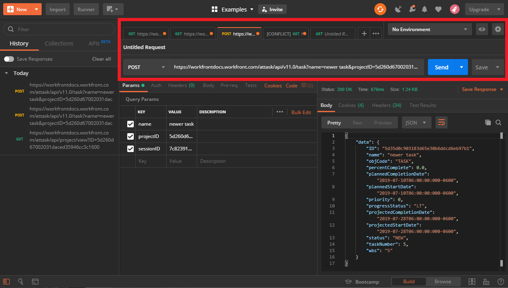
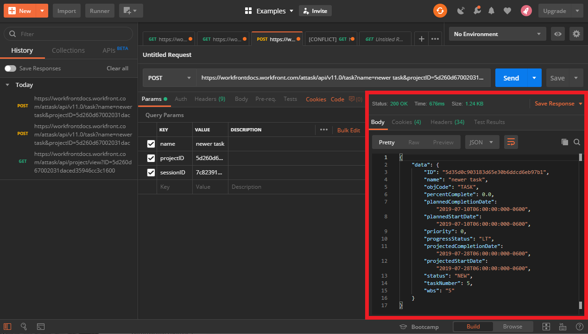
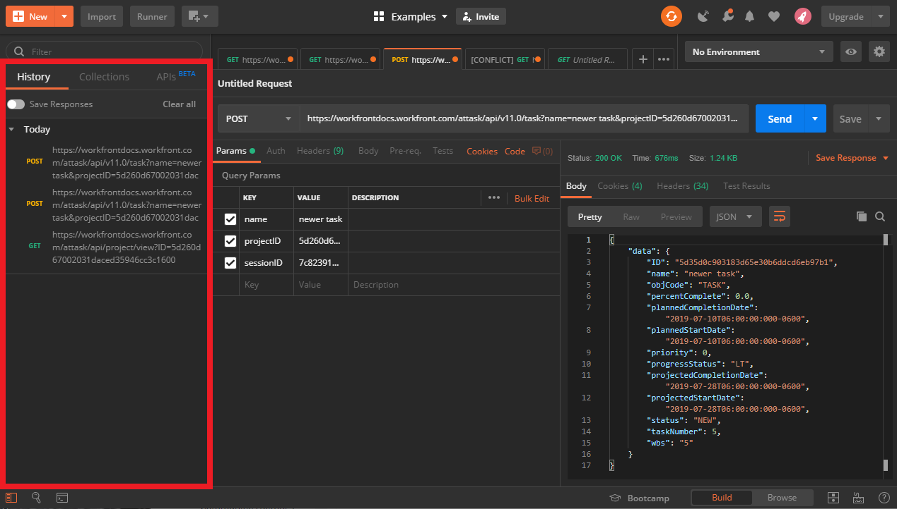

Why use a GUI REST client?
GUI REST clients give you a visually-based organizational system for making requests to API databases and analyzing responses. Typically, they also include many other convenient features, like the ability to save requests and responses that you have made to different API databases.
GUI clients also allow you to quickly request endpoints using various methods without having to know any specific code or syntax, which is necessary when using command-line based clients like cURL.
Why use Postman?
Postman is a GUI REST client that is free to download and is available for both PC and Mac. All of the examples covered in the getting started section will be demonstrated in Postman. You can download your free copy directly from the publisher via their website GetPostman.com.
Postman layout
Postman has many convenient features that simplify the processes involved with APIs. To learn more about all the features, it is recommended that you consult the resources provided by the Postman development team. For the purposes of completing the project at the end of the Workfront Getting Started documentation, it is important that you are familiar with 4 main areas of the Postman layout:
The request section
This section contains the URI field that you will use to make your request. Notice that Postman doesn't require you to include the method as a part of the URI. Instead you can select the method via the drop down menu, which is located in the lower left-hand corner of the section.
The request section also features tabbed browsing. This feature is an important organizational tool which allows you to work on different requests without the need to close others.
The parameter section
In the parameters section, Postman will automatically populate a list of all the query parameters that are included in your URI. Postman will also include the values of those parameters, if they are available.
After this list populates you can use the value field of each corresponding parameter to change its value, rather than having to go back and change the paramter in the URI directly.
There is also a description field which allows you to write a short description for each parameter, in your own words.
In the example included below, Postman has identified 3 query parameters and their corresponding values:
- name: The value of this parameter is "newer task", which is the name of the new task which is to be created when this request is made.
- projectID: The value of this parameter is "5d260d67. . ." this is a truncated version of the project ID under which "newer task" is being created.
- sessionID: The value of this parameter is "7c82391. . ." which is truncated, and is used to authenticate the request being made.
The response section
The response section contains the information which is returned to you after making a request. In the top left-hand corner of the response section some of the header information is displayed for easy access. For example, the Status of the response featured below is "200" which indicates that the server received the request and delivered a response correctly.
The history section
The history section keeps track of all the requests that you've made over time. There is also a toggle switch to save your responses. Having a history section allows you to review the work that you've done, without having to remake a request.
